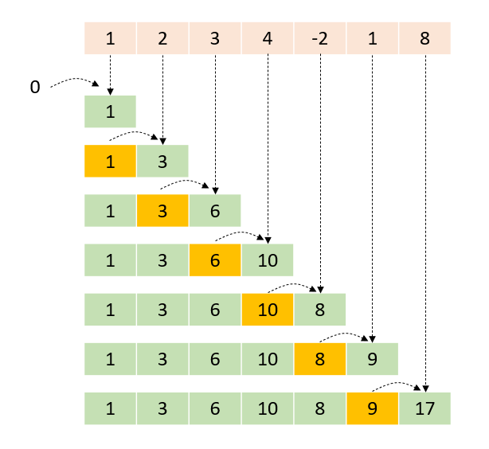

Parallel Scan
Taskflow provides standard template methods for scanning a range of items on a CUDA GPU.
Include the Header
You need to include the header file, taskflow/cuda/algorithm/scan.hpp, for using the parallel-scan algorithm.
#include <taskflow/cuda/algorithm/find.hpp>
What is a Scan Operation?
A parallel scan task performs the cumulative sum, also known as prefix sum or scan, of the input range and writes the result to the output range. Each element of the output range contains the running total of all earlier elements using the given binary operator for summation.
Scan a Range of Items
tf::[first, last). The term "inclusive" means that the i-th input element is included in the i-th sum. The following code computes the inclusive prefix sum over an input array and stores the result in an output array.
const size_t N = 1000000; int* input = tf::cuda_malloc_shared<int>(N); // input vector int* output = tf::cuda_malloc_shared<int>(N); // output vector // initializes the data for(size_t i=0; i<N; input[i++] = rand()); // create an execution policy tf::cudaStream stream; tf::cudaDefaultExecutionPolicy policy(stream); // queries the required buffer size to scan N elements using the given policy auto bytes = policy.scan_bufsz<int>(N); auto buffer = tf::cuda_malloc_device<std::byte>(bytes); // computes inclusive scan over input and stores the result in output tf::cuda_inclusive_scan(policy, input, input + N, output, [] __device__ (int a, int b) {return a + b;}, buffer ); // synchronizes and verifies the result stream.synchronize(); for(size_t i=1; i<N; i++) { assert(output[i] == output[i-1] + input[i]); } // delete the device memory cudaFree(input); cudaFree(output); cudaFree(buffer);
The scan algorithm runs asynchronously through the stream specified in the execution policy. You need to synchronize the stream to obtain correct results. Since the GPU scan algorithm may require extra buffer to store the temporary results, you need to provide a buffer of size at least larger or equal to the value returned from tf::.
On the other hand, tf::
// computes exclusive scan over input and stores the result in output tf::cuda_exclusive_scan(policy, input, input + N, output, [] __device__ (int a, int b) {return a + b;}, buffer ); // synchronizes the execution and verifies the result stream.synchronize(); for(size_t i=1; i<N; i++) { assert(output[i] == output[i-1] + input[i-1]); }
Scan a Range of Transformed Items
tf::[first, last) and computes an inclusive prefix sum over these transformed items. The following code multiplies each item by 10 and then compute the inclusive prefix sum over 1000000 transformed items.
const size_t N = 1000000; int* input = tf::cuda_malloc_shared<int>(N); // input vector int* output = tf::cuda_malloc_shared<int>(N); // output vector // initializes the data for(size_t i=0; i<N; input[i++] = rand()); // create an execution policy tf::cudaStream stream; tf::cudaDefaultExecutionPolicy policy(stream); // queries the required buffer size to scan N elements using the given policy auto bytes = policy.scan_bufsz<int>(N); auto buffer = tf::cuda_malloc_device<std::byte>(bytes); // computes inclusive scan over transformed input and stores the result in output tf::cuda_transform_inclusive_scan(policy, input, input + N, output, [] __device__ (int a, int b) { return a + b; }, // binary scan operator [] __device__ (int a) { return a*10; }, // unary transform operator buffer ); // wait for the scan to complete stream.synchronize(); // verifies the result for(size_t i=1; i<N; i++) { assert(output[i] == output[i-1] + input[i] * 10); } // delete the device memory cudaFree(input); cudaFree(output); cudaFree(buffer);
Similarly, tf::
const size_t N = 1000000; int* input = tf::cuda_malloc_shared<int>(N); // input vector int* output = tf::cuda_malloc_shared<int>(N); // output vector // initializes the data for(size_t i=0; i<N; input[i++] = rand()); // create an execution policy tf::cudaStream stream; tf::cudaDefaultExecutionPolicy policy(stream); // queries the required buffer size to scan N elements using the given policy auto bytes = policy.scan_bufsz<int>(N); auto buffer = tf::cuda_malloc_device<std::byte>(bytes); // computes exclusive scan over transformed input and stores the result in output tf::cuda_transform_exclusive_scan(policy, input, input + N, output, [] __device__ (int a, int b) { return a + b; }, // binary scan operator [] __device__ (int a) { return a*10; }, // unary transform operator buffer ); // wait for the scan to complete stream.synchronize(); // verifies the result for(size_t i=1; i<N; i++) { assert(output[i] == output[i-1] + input[i-1] * 10); } // delete the device memory cudaFree(input); cudaFree(output); cudaFree(buffer);